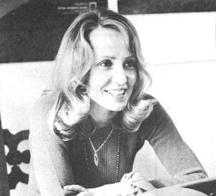

One afternoon almost two years ago, a group of housewives paraded through mid-town Manhattan supermarkets as if reenacting the Boston Tea Party. Instead of dumping tea in the aisles, however, they posted charts which listed detergent phosphate count and denoted environmentally safe and unsafe cleaning powders. It was the first real demonstration of how Consumer Action Now, a new environmental organization, planned on warning the public about the ways in which everyday products affect the welfare of our planet and its inhabitants.
C.A.N. was founded by two women who became concerned enough by our deteriorating environment to do something about reversing its downward trend. "Just being for trees, fresh air and pure water isn't enough, " reasoned Lola Redford, wife of actor Robert Redford, and Ilene Goldman, wife of author William Goldman. "We're all for ecology but few of us know how to begin living our lives in ecologically sound ways. We need information that will help us distinguish between environmentally good' and 'bad' products so that we can vote for (buy and/or recycle) the good and vote against (not buy or use at all) the bad every day of our lives.
Lola and Ilene (and 15 other concerned women) set out to gather such pertinent information and distribute it through a newsletter (printed, of course, on recycled paper) that C.A.N. hopes eventually will reach all the buyers in the country. The group also intends to lobby in Washington, open a speaker's bureau and tour on college campuses as they gain strength . . . and they are gaining strength daily.
Which just proves, once again, that one or two people with determination CAN do comething meaningful about the environmental problem. How? Allan Richards visited Lola Redford and Ilene Goldman in C.A.N. 's New York City office to learn the secrets of their success.
PLOWBOY: What motivated you to start Consumer Action Now? Why did you leave your more or less anonymous and luxurious lives as wives of a famous actor and an accomplished writer to get actively involved with the day-to-day give-and-take between consumers and the environment?
LOLA REDFORD: It actually began with the first Earth Day. I think the event inspired many of us in the city to talk about our environmental feelings and concern. Ilene and I, especially, found that we felt women were helpless to exert meaningful pressure in the marketplace (where it really counts) because information-about how the products we buy affect us and the environment-was being withheld.
We wanted to find out and spread to other housewives the facts about how the dollars we spend work for or against the environment . . . but we couldn't locate a really good source of such information. Ilene and I sent away for pamphlets that contained a lot of basic knowledge . . . but nothing that would help the average consumer make pertinent comparisons or decisions. We tried to join an existing ecology group . . . but found none that were really concerned with the down-to-earth day-to-day projects we considered important.
At that point, we gathered 15 other concerned friends for a meeting. We all knew we had a lot to learn about ecology and we decided to organize our own group and do as much about educating ourselves and others as we could.
During that first gathering-which we held in the spring-we divided ourselves into committees to study various aspects of the environmental problem: five people on pesticides, five on solid wastes, some on water, others on additives in food and so on. Then we separated for the summer with the idea that we'd all research our specific areas for several months and come together again in the fall to share a mountain of relevant information.
ILENE GOLDMAN: We found we had a pool of really useful environmental knowledge. So much and so useful information that we immediately wanted to publish a newsletter and special leaflets through which we could pass on what we had learned to others.
PLOWBOY: Publishing and distributing information takes both a system and money. How did you organize and fund C.A.N.?
ILENE GOLDMAN: We knew we didn't want an unwieldy superorganized structure with officers and bylaws but we also knew that we should incorporate if we intended to publish a newsletter. So we all chipped in $10 for the incorporation and we each pledged 10 subscriptions, That's how we published our first issue and all the other newsletters have been funded by subscriptions. Which is to say that we've never really been funded at all . . . in fact, we just ran to the mail this morning to find enough money to pay our phone bill.
LOLA REDFORD: Not being funded does have its limitations . . . but it gives us freedom too. If we took money from people we could lose control of our concept, and if we took ads we would be limited in what we could say about products. The only work for which we really need and want funding is our research.
PLOWBOY: Tell me about the newsletter. How can it actually help consumers make ecologically sound decisions when buying products?
LOLA REDFORD: There are so many people living in large urban areas who do want to help preserve the planet's resources and use those resources wisely . . . but who become so frustrated when dealing with city governments and large corporations. It's very hard to accomplish anything meaningful in the city. How do you deal with Con Edison, for instance? You have to go through incredible red tape. In the country you can take action that is so much more direct . . . you can chain yourself to a tree that you don't want cut down . . . but there are so many obstacles in the city.
Our newsletters try to hack through these obstructions. We attempt to give our readers an, overall picture of what is happening today in specific area"s and what they can do to encourage the good trends and discourage the bad. We name products that are good and otherwise give consumers ideas that will allow them to begin changing the existing conditions of our environment immediately.
Our first issue studied in some depth the use of stilbestrol in meats. The second newsletter was on bread, the third on recycling of solid wastes, the fourth on noise, the fifth on pesticides and the sixth on the pollution in ladies' cosmetics. As we grow we intend to develop the publication from a one-topic newsletter into a more complete consumers' newspaper that people can read to educate themselves about all the products they're buying.
PLOWBOY: Where do you get your in formation? Who actually checks your data?
LOLA REDFORD: Our information comes from various sources. When we began the newsletter we went to Dr. Rene Dubos at Rockefeller University and begged him to help us. Dr. Dubos kindly gave us the names of some young scientists who have assisted us with the scientific part of our letter.
ILENE GOLDMAN: Yes. For example, there's Glen Paulson who is Dr. Dubos' assistant and a member of the Scientists' Committee for Public Information. Glen and other young scientists read over our material and tell us when we're scientifically right or wrong. They've also put us on SCPI's air, water, pesticide and other subcommittees and when they do work in certain areas, they feed us the data of their findings. The SCPI also has a library which we can use.
LOLA REDFORD: Surprisingly enough, much of our information comes directly from industrial leaders too. We're in constant communication with manufacturers. We read their literature and cross-examine them about their products and we've found that manufacturers are very accurate in their descriptions of the consumer and his purchasing habits.
ILENE GOLDMAN: Industrial leaders usually tell us that they make products because of "consumer demand". They wrap vegetables because of consumer demand . . , they produce super-white miracle cleaners because of consumer demand . . . they do everything because of consumer demand. The consumer is always used as the scapegoat.
LOLA REDFORD: Yes. It was good we learned this at the beginning. We quickly realized that if we were going to accomplish anything worthwhile with the newsletter, we'd have to show consumers how their collective buying habits were causing certain less-than-good products to be made. Then, by showing the buyers how to change their habits and attitudes, we'd be able to help create a demand for better products and safer commodities.
Industry (although usually without knowing it) has certainly helped give C.A.N. a better understanding of market operations, buying trends and the production of certain goods. Many manufacturers, of course, are interested in helping us and have supplied real information which we feel is important for our readers to know. But the most vital feedback we've gained from industry is a feeling for its attitude toward the ecology movement. Manufacturers, on the whole, still seem to believe and hope that the environmental movement is just another passing fad . . . something which will disappear in the night.
ILENE GOLDMAN: In addition to the material we receive from the SCPI and glean from our dealings with industry, our newsletter contains much of our own research and leg work. We go to grocery stores and buy products, read labels, check ingredients and make spot surveys of chemicals and additives in the food. SCPI members than translate the chemical compounds into laymen's terms and we call up the manufacturers to find out why they think it's necessary to put all the emulsifiers, tenderizers, preservatives, artificial colorings, flavorings and other additives into the things we eat.
PLOWBOY: Is publishing a "Consumer's Digest" newsletter the prime function of C.A.N.?
LOLA REDFORD: It is right now but we want to expand C.A.N. until our publication is just one arm of the operation. There's so much that needs to be done.
Consider research. We'd like to get enough funding to finance long-overdue work by some of the marvelous young scientists we know. Even the simplest experiments-conducted by a completely independent organization-can be quite meaningful to the ordinary citizen.
We'd like to test the tap water here in New York City, for instance, and see how good it really is. Glen says it's good and that the Federal Government made a National Health study which found that the drinking water here was very clean, whereas the water in places like Maine and Hawaii was quite bad. We'd like to find out if that's true and such tests take time, qualified people, proper equipment and money.
With our research reports in hand, we'd then like to lobby and testify at conservation hearings in Albany and Washington. We think such evidence would support some good arguments for the restoration and preservation of the environment.
ILENE GOLDMAN: What we would be doing, you see, is applying pressure to all three sides of the so-called "consumer problem": (1) we'd be using the newsletter to educate the buyer into demanding better and more ecologically sound products, (2) at the same time, we'd be going to the manufacturer and saying, "Hey, the consumer is ready for something better . . . why not try to upgrade your line a little?" and (3) just to help speed the whole process a bit, we'd also be lobbying for new political ground rules in favor of the changes we're encouraging.
Idealistically, of course, this plan sounds great . . . but we don't expect it to totally work. We are sure, however, that meaningful change will take place only if we all begin to think in terms of such an integrated and comprehensive approach.
PLOWBOY: Do you plan to reach the consumer through channels other than your newsletter?
ILENE GOLDMAN: We'd like to start a speaker's bureau and the idea excites me personally because we've had such good response from high school students. It's so important to reach teen-agers with education about the kind of products they should use in their future households. It will be such a plus if we can just get to the junior high and high schools. Almost all our group is prepared to speak . . . not as real experts, but as informed consumers with well-authenticated information.
PLOWBOY: What about speaking at colleges and, perhaps, organizing Consumer Clubs on campuses?
LOLA REDFORD: We'd like that very much but we don't have time to be so diversified. There are only 17 of us, we're all either mothers or have full-time jobs and can work here only part time. Our present prime C.A.N. duty is researching and publishing the newsletter. Sometimes, you know, if you try to do too much, nothing gets done right at all.
ILENE GOLDMAN: Speaking of college students, some from Oberlin College-my husband's alma mater-came by to talk to him recently. They've just started an "organic" dormitory and they want to get the Ohio farmers to grow their crops naturally. College students, obviously, can be a very important force for changing the environment and it would be great if we could get some clubs established.
PLOWBOY: What about natural and the so-called "organic" foods? Do you plan to do research in that area? A health food store just opened around the corner from my apartment and I stopped in to buy some salad dressing. I read the label on the bottle and found that the supposedly "organic" salad dressing for sale there contained monosodium glutamate, the very chemical in regular dressing. When I asked the owner about it, he claimed he wasn't a chemist and didn't know why the ingredient was in the dressing or what it was.
ILENE GOLDMAN: We're trying to find alternatives to both the popular junk we all eat and the expensive pseudo-natural foods which some dealers are using to cash in on the consumer's rapidly expanding desire for simpler, more healthful nourishment. One of C.A.N.'s members has begun to check out "organic" farmers and their products. She's already found some discrepancies.
LOLA REDFORD: Yes, we've found an "organic" pesticide called Hargate which contains pyretheums. It's just like Raid or No-Bug . . . but it has an "organic" label and is sold (at twice the price) in health food stores.
ILENE GOLDMAN: The girl who's researching natural foods is taking a bread baking class and she had to buy two different batches of "organic" flour from the health food store. One was twice as expensive as the other, yet when she took them both to class, her instructor showed her that they were exactly the same. Not many people know enough about flour to catch such sleight of hand.
PLOWBOY: I hope that you or someone will be able to exert more pressure on the dramatic television and radio commercials for "lead-free" gas, "non-polluting" detergents and all the other products designed, quite obviously, to cash in on the interest in ecology. Some must be straightforward and aboveboard . . . but most certainly seem to be very tricky and carefully worded to imply that the item being touted is environmentally safe when it really isn't.
ILENE GOLDMAN: There is presently an active movement-led by The Council on Children, Media and Merchandising-which has proposed a code for advertising edibles to children. The code would require advertisers to tell the consumer the true ingredients of a product and state the nutrient contribution of the food. It would also forbid the claim of product superiority over similar or identical edibles which .have been standardized by a Food & Drug Administration guide and it would require sponsors, agencies and the broadcasting industry to finance a broad research study of the impact of television on the young. C.A.N. is supporting this program and we encourage others in favor to write to the Council at 1346 Connecticut Avenue, Washington, D.C. 20036.
I think that advertising-which is so often misleading-should be controlled . . . and I think that it should be controlled for the sake of both the child and the adult consumer.
PLOWBOY: Has C.A.N. actually pressured the FCC or FDA in any way to make them more concerned about the consumer's plight?
ILENE GOLDMAN: Our first Joe Paloota Award was given to the FDA for the horrible job it's doing. That was really sad, too, because we've found the people at the FDA to be dedicated and strait-laced. It's just that the agency is so terribly understaffed.
There are only 5,000 FDA people to investigate one-third of the entire Gross National Product of this country. There is absolutely no way the FDA can be effective. The people there do want to protect the consumer-the FDA scientists are especially hard-working-but it just seems impossible.
PLOWBOY: How has local government responded to C.A.N.? Has Mayor Lindsay or Jerome Kretchemer, Administrator of the Environmental Protection Agency of New York City, shown any interest in helping you aid the consumer?
LOLA REDFORD: Kretchemer has been terrific when it comes to helping coordinate a drive of some kind . . . but-other than show an interest in the newsletter because it fills a need-it's hard to evaluate what local, state or national politicians will eventually do to support our work.
ILENE GOLDMAN: Although the local government hasn't done much with us, Kretchemer has been an important force behind many of the environmental changes instituted here in New York City. There used to be a law that all paper purchased by the City of New York had to be virgin stock . . . now New York City is specifying recycled or partly recycled paper for official use. This subtle change was brought about by Kretchemer and Lindsay. Some other officials have also shown signs of making steps in the right direction.
PLOWBOY: What reaction has C.A.N. received from consumers and manufacturers? Has there been a lot of feedback?
ILENE GOLDMAN: When we went around tacking up phosphate count posters on supermarket walls we got a very optimistic reaction from everyone. Survival is instinctive. One store owner-Steven D'Agostino, I think-summed it up beautifully when he said, "Honey, I want to live just as much as you do." The pace of change is hard to estimate but, eventually, we'll all-consumers, store owners, manufacturers and government officials-come around to a greater respect for the environment.
LOLA REDFORD: Yes. We've received encouragement from unexpected places. The consumers, in particular, have been great. As I said before, people are concerned and do want to get involved . . . especially here in New York City where the trash, the smog, the noise and the smell confront you wherever you go.
Many people, however, just don't know how to fight back . . . and others mean well but are often a little too lazy and too used to their conveniences to strike out on their own. When we put our newsletter right into the hands of such individuals, though, we find that they actually react. When we go into a supermarket and post signs telling housewives which detergents are and which are not safe to buy, we've learned that our fellow New Yorkers do pay attention and do make an effort to change their buying habits. It's a small step but a positive one and it encourages us to try to awaken consumers on a larger scale.
Our hope is to get the consumer so aware that, eventually, there will be no demand at all for products which are not environmentally sound. We want to use the laws of the marketplace to reward the manufacturers who attempt to work in harmony with the long-range interests of the planet.
Let's face it: the system as it now stands allows the businessman to exploit both the consumer and the environment . . . and he often does. We have to wake everyone up to the fact that the game simply doesn't have to be played that way.
The above interview was conducted over a year ago and, since the time that Allan talked to Lola and Ilene, CA.N. has both endured and thrived. The hard core of non-paid, strictly volunteer members has grown from 17 to 25 and the circulation of C.A.N.'s newsletter has mushroomed from that original 170 to over 7,000.
The organization has further expanded its activities to include a fairly widespread environmental education program for grade school children and is currently planning the production of an animated ecology film for youngsters. This past June, C.A.N. also held a special forum designed to show concerned citizens how to apply political pressure in behalf of the environment during an election year.
The secret of C.A.N.'s success? Hard work and plenty of it. The group's members (entirely volunteer and unpaid) simply devote every spare minute to the fight to restore, preserve and protect the environment. This means, of course, that those central members have little time to spend answering random letters . . . so please don't write CA.N. asking how to begin meaningful ecological action in your area. Just do as Lola, Ilene, and 15 other determined ladies in New York City did . . . and start doing the best you can right where you are right now
And for a steady source of researched and authenticated material with which to carry on the Good Fight, you might consider subscribing to the C.A.N. newsletter. A one-year regular subscription is $5.00 and a special student subscription costs $3.00. Folks who are a little more flush and would like to kick extra bucks into C.A.N.'s educational fund might prefer a $10.00 contributing or the $25.00 .sponsoring subscription. As the saying goes, "It's for a good cause " . . . the best in the world. Just write:
C.A.N.
30 East 08th Street
New York
New York 10021
|
 MAUREEN THORP |
MAUREEN THORP |
|